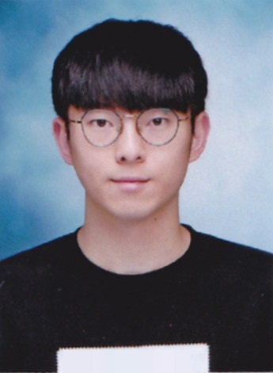

만을 위해
만을 위해지원동기
안녕하십니까!
`뭐든지 배우고 도전'하는 학생 이지환입니다!
작년, 우연히 웹에 대해 알게 된 후 관심을 가지고 공부해봤습니다.
혼자 공부하는 것에 아쉬움이 남을때 쯤, ROTC 동계훈련 동기후보생을 통해 SOPT를 처음 알게 되었습니다.
다양한 조직경험으로 함께 일하는 것에 자신있는 만큼 제가 관심있는 웹 분야에 대해 28기로서 ✨도전✨하고자 지원했습니다.
✨항상 노력하는 자세를 가짐으로써 SOPT의 유능한 회원이 되기위해 노력하겠습니다!✨
인적사항
- 생년월일 : 2000년 09월 13일
- 1. 동국대학교 정보통신공학전공 19학번
- 2. 동국대학교 112 학군단 61기 후보생
- 3. 2020년 정보통신공학전공 소모임 CAPS 33대 회장
- 4. 멘토링 & 강연 교육기부 봉사단 인재계발부 7기